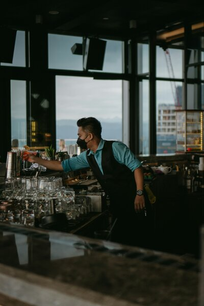

Aroma & Letra
El mejor café de la ciudad

El local tiene una decoración cálida y acogedora. Las paredes suelen estar pintadas en tonos neutros o tierra, decoradas con cuadros abstractos o fotografías de granos de café. La iluminación es suave, combinando luces cálidas con la luz natural que entra por amplios ventanales. Hay plantas en macetas que dan vida al ambiente.
El corazón de la cafetería es la barra, donde una reluciente máquina de espresso italiana ocupa el lugar central. Detrás, estantes exhiben tazas, jarras de leche y frascos con granos de café de diferentes orígenes. A un lado, una vitrina refrigerada muestra pasteles, tartas, muffins, croissants y sándwiches frescos del día
Conoce al equipo
Juntos hacemos tu dia inicie con una increible taza de cafe